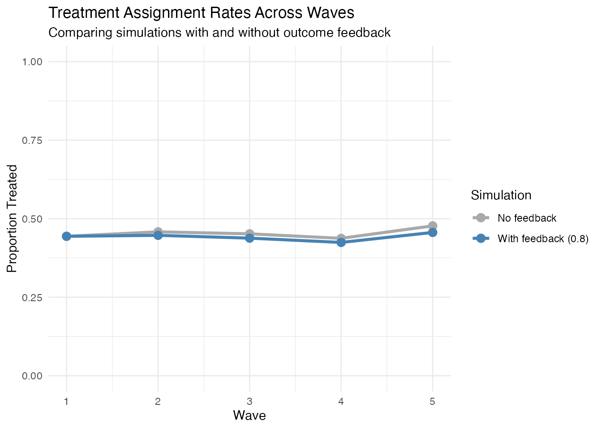
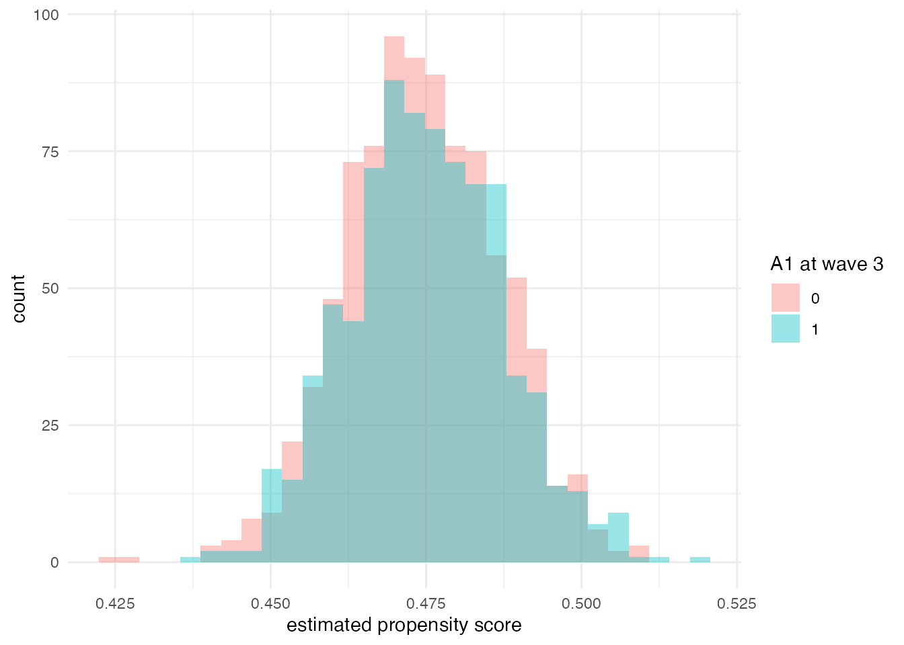

library(margot) # core simulation + estimation tools
#> margot 1.0.201
library(dplyr) # tidy manipulation
#>
#> Attaching package: 'dplyr'
#> The following objects are masked from 'package:stats':
#>
#> filter, lag
#> The following objects are masked from 'package:base':
#>
#> intersect, setdiff, setequal, union
library(tidyr) # data reshaping
library(ggplot2) # graphics for examples1. Why simulate longitudinal data?
Synthetic panel data with known data-generating mechanisms are invaluable for
- Teaching: illustrate causal ideas where the ground truth is visible;
- Software testing: ensure estimators recover the truth under controlled violations;
- Power & design: gauge sample-size or wave-number requirements;
- Method development: iterate quickly without large, confidential datasets.
margot_simulate() is our workhorse; the sections below
unpack its interface and demonstrate common scenarios.
2. Anatomy of margot_simulate()
The simulator draws baseline covariates B, time-varying covariates L, exposures A, and lead outcomes Y across a user-specified number of waves. Figure 1 gives a high-level schematic.
# build a toy DAG with DiagrammeR for illustration only (not evaluated when package is built)
if (requireNamespace("DiagrammeR", quietly = TRUE)) {
DiagrammeR::grViz(
"digraph {graph [rankdir = LR, bgcolor = none]
node [shape = box, fontname = Helvetica]
subgraph cluster0 {label = \"Wave 0\"; style = dashed; B; t0_L;}
subgraph cluster1 {label = \"Wave 1\"; style = dashed; t1_A; t1_L; t1_Y;}
subgraph cluster2 {label = \"Wave 2\"; style = dashed; t2_A; t2_L; t2_Y;}
B -> t1_L -> t1_A -> t1_Y
B -> t1_A
t1_Y -> t2_A [style = dashed] // optional y_feedback
t1_A -> t2_L [style = dashed] // covar_feedback
t1_A -> censor1 [style = dashed]
censor1 [shape = circle, label = \"C\"]
}"
)
}
Figure 1: data-generating process underlying
margot_simulate(). Solid arrows are structural paths;
dashed arrows indicate optional feedback loops and censoring.
Key arguments (non-exhaustive):
| Argument | Purpose | Typical values |
|---|---|---|
n |
number of individuals | 100–10 000 |
waves |
follow-up waves (outcomes measured at waves + 1) |
3–10 |
p_covars |
# of time-varying L covariates | 0–5 |
exposures |
list describing each A variable | see §3 |
outcomes |
list describing Y variables | rarely needed |
y_feedback |
strength of Y → A path (0 disables) | 0–1 |
censoring |
dropout mechanism: rate,
exposure_dependence, … |
list |
item_missing_rate |
MCAR missingness on observed values | 0–0.5 |
wide |
return wide format (TRUE recommended; long format under development) | TRUE |
The default coefficient set is returned by
.default_sim_params(). Supply a named list to the
params argument to override any subset.
3. Worked examples
3.1 Baseline: simple continuous outcome
# generate data in wide format (default)
basic_dat <- margot_simulate(n = 500, waves = 3, seed = 2025)
# examine structure
str(basic_dat[, 1:10])
#> tibble [500 × 10] (S3: tbl_df/tbl/data.frame)
#> $ id: int [1:500] 1 2 3 4 5 6 7 8 9 10 ...
#> $ B1: num [1:500] -0.792 1.332 -0.245 -1.159 -1.712 ...
#> $ B2: num [1:500] 0.73 -1.733 0.283 -1.453 -0.11 ...
#> $ B3: num [1:500] 0.306 -2.069 -1.352 -2.105 -1.475 ...
#> $ B4: num [1:500] -0.647 0.231 -1.929 -0.545 0.299 ...
#> $ B5: num [1:500] -0.376 -0.302 -1.994 -0.312 -0.3 ...
#> $ B6: num [1:500] -0.201 -0.427 -0.402 -0.418 0.278 ...
#> $ B7: num [1:500] 0.128 1.205 -0.959 -1.054 -2.097 ...
#> $ B8: num [1:500] 0.206 0.174 -0.49 -0.459 0.583 ...
#> $ B9: num [1:500] -1.0513 0.0444 0.6933 0.0259 -0.7786 ...
#> - attr(*, "margot_meta")=List of 2
#> ..$ args : language margot_simulate(n = 500, waves = 3, seed = 2025)
#> ..$ timestamp: POSIXct[1:1], format: "2025-07-29 09:51:48"
# summarize treatment and outcome
summary(basic_dat[c("t1_A1", "t2_A1", "t3_A1", "t4_Y")])
#> t1_A1 t2_A1 t3_A1 t4_Y
#> Min. :0.0000 Min. :0.0000 Min. :0.0000 Min. :-2.4453
#> 1st Qu.:0.0000 1st Qu.:0.0000 1st Qu.:0.0000 1st Qu.:-0.5044
#> Median :0.0000 Median :0.0000 Median :0.0000 Median : 0.1533
#> Mean :0.4423 Mean :0.4652 Mean :0.3641 Mean : 0.1401
#> 3rd Qu.:1.0000 3rd Qu.:1.0000 3rd Qu.:1.0000 3rd Qu.: 0.9146
#> Max. :1.0000 Max. :1.0000 Max. :1.0000 Max. : 2.7243
#> NA's :136 NA's :227 NA's :305 NA's :3633.2 Heterogeneous treatment effects (effect modification)
Suppose the causal effect of exposure A1 varies with
baseline covariate B2. We encode this via the
het sub-list:
het_dat <- margot_simulate(
n = 4000,
waves = 3,
exposures = list(
A1 = list(
type = "binary",
het = list(modifier = "B2", # effect modifier
coef = 0.6) # γ: interaction strength
)
),
exposure_outcome = 0.4, # marginal main effect β
seed = 2027
)Verify the interaction:
fit_het <- lm(t4_Y ~ t3_A1 * B2, data = het_dat)
summary(fit_het)$coefficients
#> Estimate Std. Error t value Pr(>|t|)
#> (Intercept) 0.01650478 0.03845638 0.4291819 6.678640e-01
#> t3_A1 0.42220419 0.05588604 7.5547343 8.019120e-14
#> B2 0.07359943 0.03916117 1.8793981 6.042006e-02
#> t3_A1:B2 0.72038968 0.05588497 12.8905800 8.232715e-36Take-away. The interaction term (
t3_A1:B2) recovers
$\\beta_{\\text{het}} \\approx 0.6$, matching the data-generating value.
3.3 Outcome → Treatment feedback
Realistic behavioural processes often exhibit reflexivity: past
outcomes influence future treatment uptake. Let’s compare simulations
with and without y_feedback:
# Without feedback
no_fb_dat <- margot_simulate(
n = 2000,
waves = 5,
y_feedback = 0, # no Y → A dependency
wide = TRUE,
seed = 101
)
# With feedback
fb_dat <- margot_simulate(
n = 2000,
waves = 5,
y_feedback = 0.8, # strong Y → A dependency
params = list(exp_L1_coef = 0.3), # optional A → L feedback
wide = TRUE,
seed = 101
)Let’s examine how y_feedback affects treatment patterns:
# Calculate treatment rates for both datasets
get_treatment_rates <- function(data, label) {
data %>%
select(starts_with("t") & ends_with("_A1")) %>%
summarise(across(everything(), ~ mean(.x, na.rm = TRUE))) %>%
tidyr::pivot_longer(
cols = everything(),
names_to = "wave_var",
values_to = "prop_treated"
) %>%
mutate(
wave = as.numeric(sub("t([0-9]+)_A1", "\\1", wave_var)),
feedback = label
)
}
# Combine rates from both simulations
combined_rates <- bind_rows(
get_treatment_rates(no_fb_dat, "No feedback"),
get_treatment_rates(fb_dat, "With feedback (0.8)")
)
# Display the comparison
combined_rates %>%
filter(wave > 0) %>%
tidyr::pivot_wider(names_from = feedback, values_from = prop_treated) %>%
arrange(wave)
#> # A tibble: 5 × 4
#> wave_var wave `No feedback` `With feedback (0.8)`
#> <chr> <dbl> <dbl> <dbl>
#> 1 t1_A1 1 0.444 0.444
#> 2 t2_A1 2 0.458 0.447
#> 3 t3_A1 3 0.452 0.438
#> 4 t4_A1 4 0.438 0.424
#> 5 t5_A1 5 0.477 0.456Visualise treatment rates across waves:
# Plot comparison
ggplot(combined_rates %>% filter(wave > 0),
aes(x = wave, y = prop_treated, color = feedback, group = feedback)) +
geom_line(linewidth = 1.2) +
geom_point(size = 3) +
labs(
title = "Treatment Assignment Rates Across Waves",
subtitle = "Comparing simulations with and without outcome feedback",
x = "Wave",
y = "Proportion Treated",
color = "Simulation"
) +
theme_minimal() +
scale_y_continuous(limits = c(0, 1)) +
scale_color_manual(values = c("No feedback" = "darkgray",
"With feedback (0.8)" = "steelblue"))
Note: The y_feedback parameter affects how past outcomes
influence future treatment assignment. The specific pattern depends on
the interaction between outcome values, baseline covariates, and the
simulation parameters. In practice, y_feedback creates time-varying
confounding by making treatment assignment depend on past outcomes.
3.4 Positivity diagnostics
Estimators grounded in the g-formula, IPW, or TMLE require sufficient overlap (positivity) of treatment probabilities across strata of measured covariates. Below we inspect estimated propensity scores at the final observed wave in the heterogeneous-effects example.
# wave-3 propensity model: A1 ~ B2
# Filter to complete cases for this analysis
het_complete <- het_dat %>%
filter(!is.na(t3_A1) & !is.na(B2))
ps_mod <- glm(t3_A1 ~ B2, family = binomial, data = het_complete)
het_complete$ps3 <- predict(ps_mod, type = "response")
ggplot(het_complete, aes(ps3, fill = factor(t3_A1))) +
geom_histogram(position = "identity", alpha = 0.4, bins = 30) +
labs(
x = "estimated propensity score",
fill = "A1 at wave 3"
) +
theme_minimal()
4. Censoring & missingness
Attrition can depend on exposure, a latent frailty shared within individuals, or both. For brevity, see the dedicated Censoring vignette.
5. Power analysis template
Combined heterogeneity and feedback can inflate sample-size requirements. Use batched simulations to trace operating characteristics; skeleton:
power_grid <- tibble::tibble(N = seq(500, 5000, by = 500))
power_grid$power <- vapply(power_grid$N, function(n) {
mean(replicate(300, {
dat <- margot_simulate(n = n, waves = 4,
y_feedback = 0.7,
exposures = list(A1 = list(type = "binary",
het = list(modifier = "B1", coef = 0.5))),
exposure_outcome = 0.3, wide = TRUE))
t.test(t5_Y ~ t3_A1, data = dat)$p.value < 0.05
}))
}, numeric(1))
ggplot(power_grid, aes(N, power)) +
geom_line() +
geom_hline(yintercept = 0.8, linetype = "dashed") +
scale_y_continuous(labels = scales::percent_format()) +
labs(y = "Power", x = "Sample size")